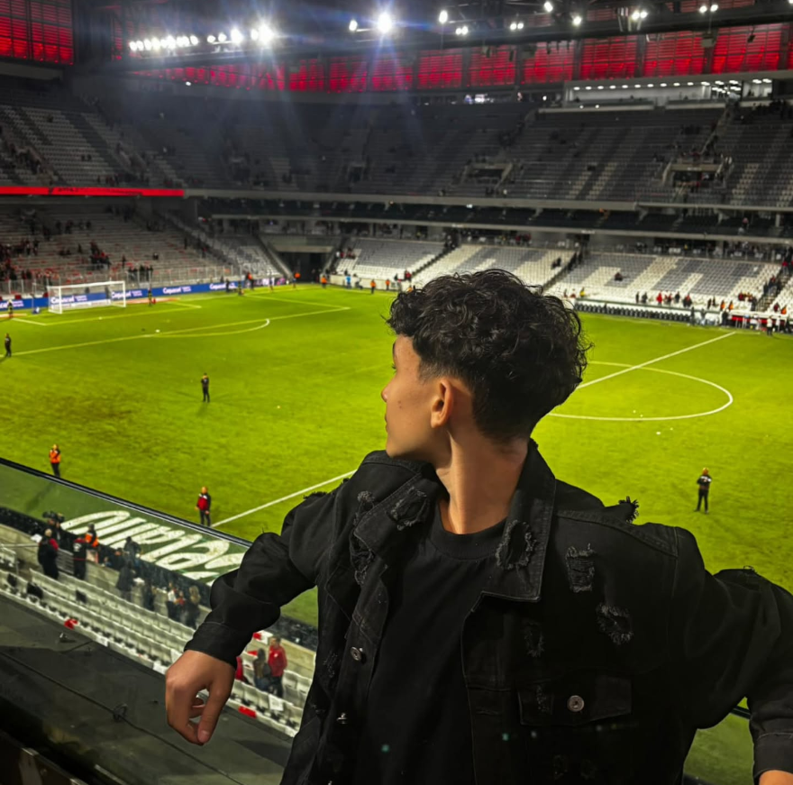

ALUNOS

Wendel Alexandre da Silva
Bio
Estudante de Desenvolvimento de Sistemas no Colégio Estadual Alberto de Carvalho, alio competências de tecnologia e programação à pesquisa acadêmica. Tenho conhecimentos práticos em desenvolvimento web (HTML, CSS, JavaScript) e modelagem de banco de dados com MySQL, além de forte vivência em escrita científica. Sou autor de artigo científico desenvolvido no Clube Científico Dos 4 Elementos, focado na morfometria alar das asas das abelhas MEllipona quadrifasciata (Mandaçaia) como bioindicadores de estresse ambiental (parceria com a UNICENTRO). Atuo também como bolsista no projeto Juventudes Camponesas em Movimento (IFPR, Itaipu Binacional e CEDerva).